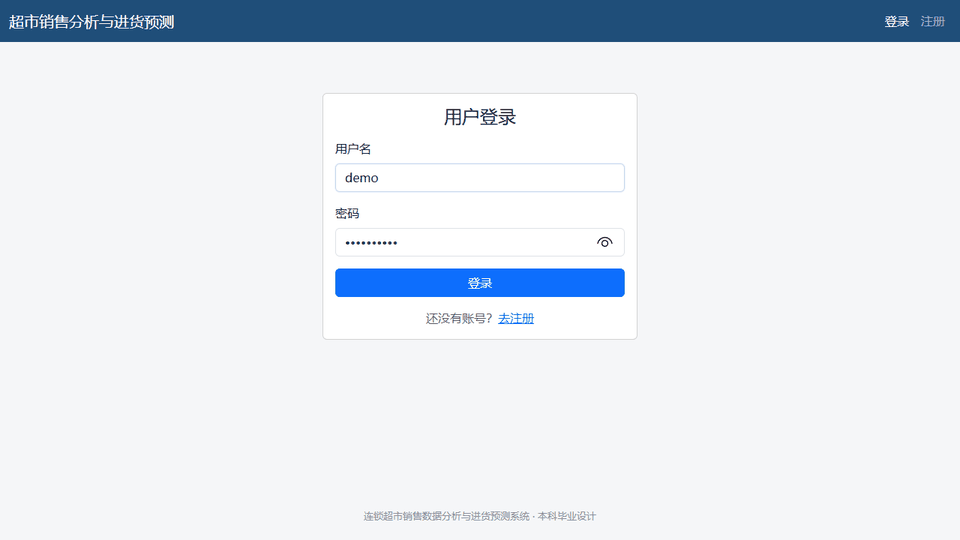
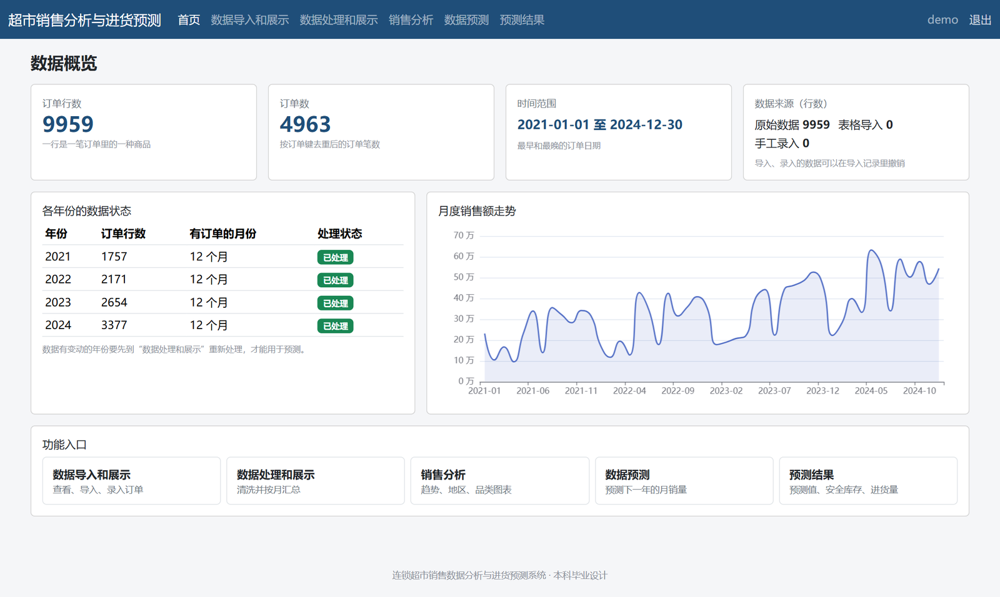
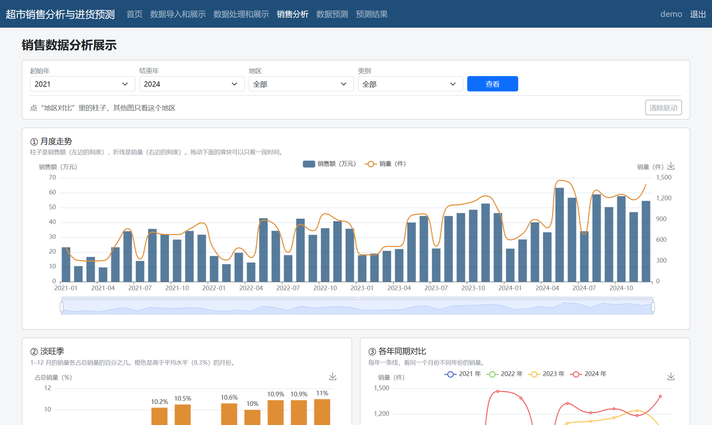
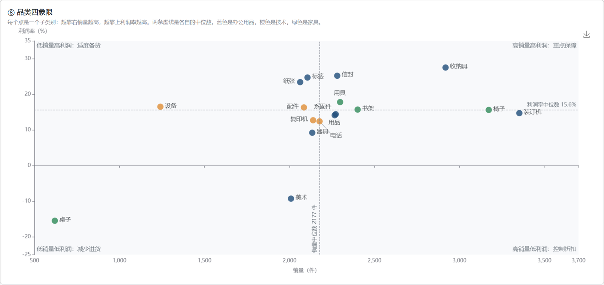
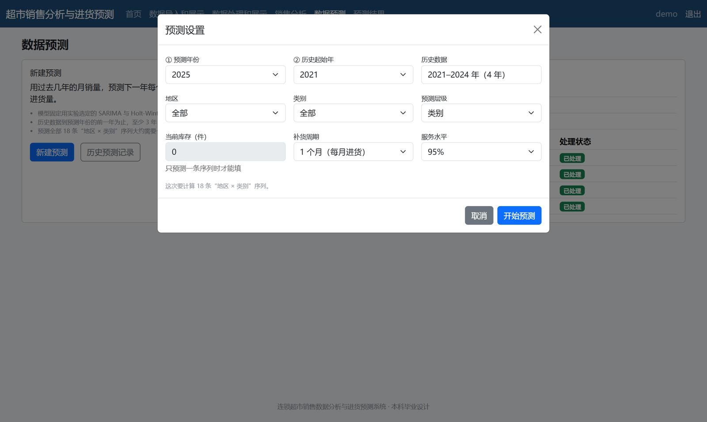
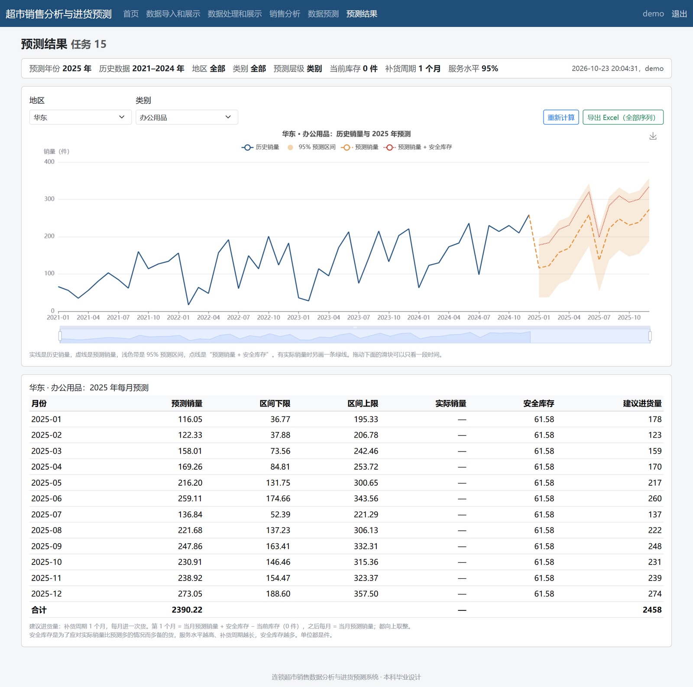
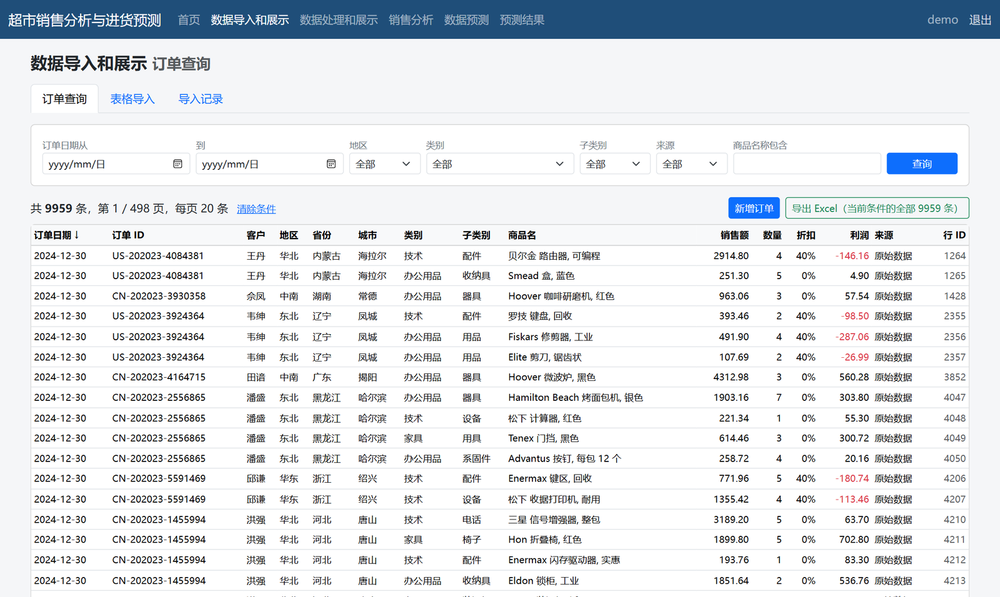

9959条订单明细（2021–2024）
18条“地区 × 类别”月度序列
33.8%最终模型测试集 WAPE
−6.5个百分点，相比季节朴素基准
系统演示
登录 → 首页概览 → 销售分析 → 预测设置 → 预测结果（演示数据库，约 9 秒）。

做了什么
- 数据质量：发现 1403 个订单 ID 被多笔订单重复使用，改用“订单 ID + 日期 + 客户 ID”识别订单；离群值只标记、不删除。
- 粒度选择：周 × 地区 × 子类别有 67.8% 的月份是零销量，月 × 地区 × 类别只有 4.3%，所以按月、按类别建模，子类别再按占比分配。
- 模型对比：季节朴素法、SARIMA、Holt-Winters、二者组合、LightGBM；2023 年验证选方案，2024 年测试只评估一次。
- 进货建议：安全库存 = z × σ × √L（95% 服务水平 z = 1.65，σ 取测试期 RMSE），第 1 个月进货 = 预测 + 安全库存 − 库存。
销售规律
数据为阿里云天池公开的模拟零售订单数据，不代表真实企业。
月度销售额（万元）
逐年增长，年内波动明显
各月份占全年销量（%）
四年平均；5–6 月、8–12 月是旺季
模型对比
18 条序列的整体 WAPE，越低越好。最终采用组合模型：两个阶段都接近最好，测试集 R² 最高（0.754）。
| 方案 | 验证集 2023 | 测试集 2024 |
|---|
预测示例：
实线是历史月销量，虚线是 2025 年上半年预测，浅色带是 95% 预测区间。
| 月份 | 预测销量 | 预测区间 | 安全库存 | 建议进货 |
|---|
系统截图





